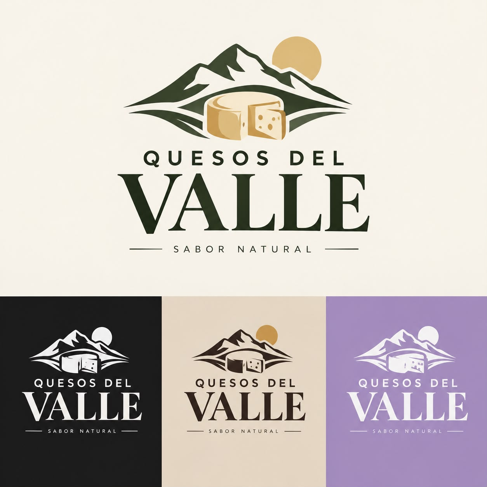
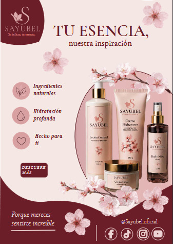
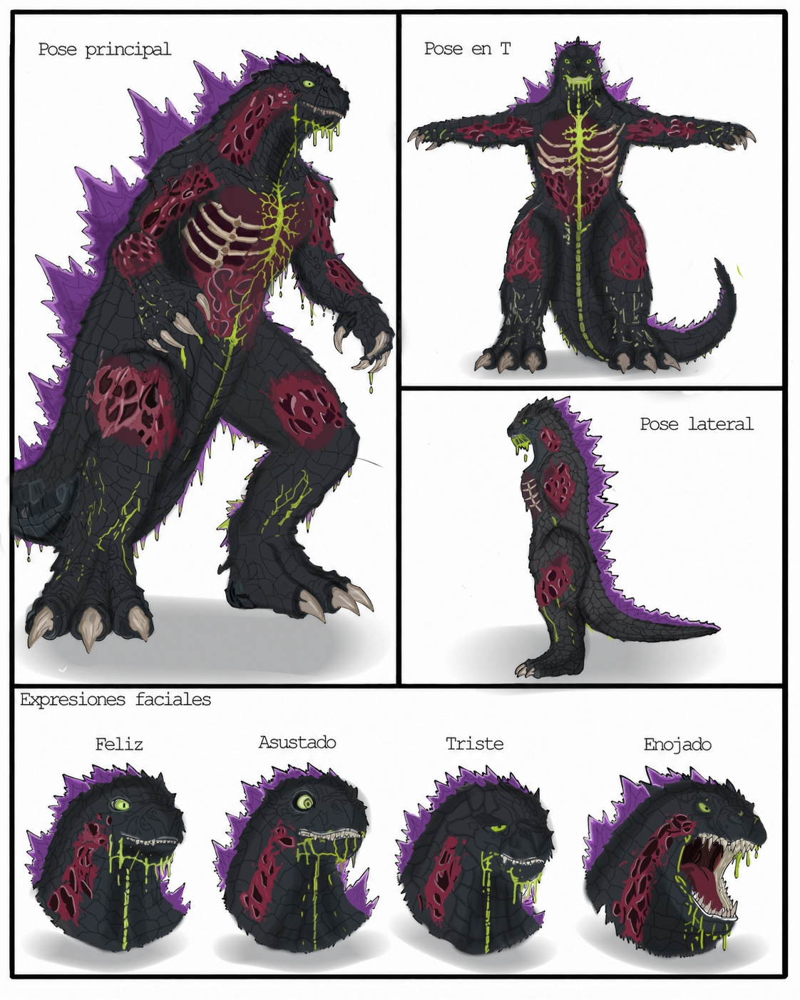
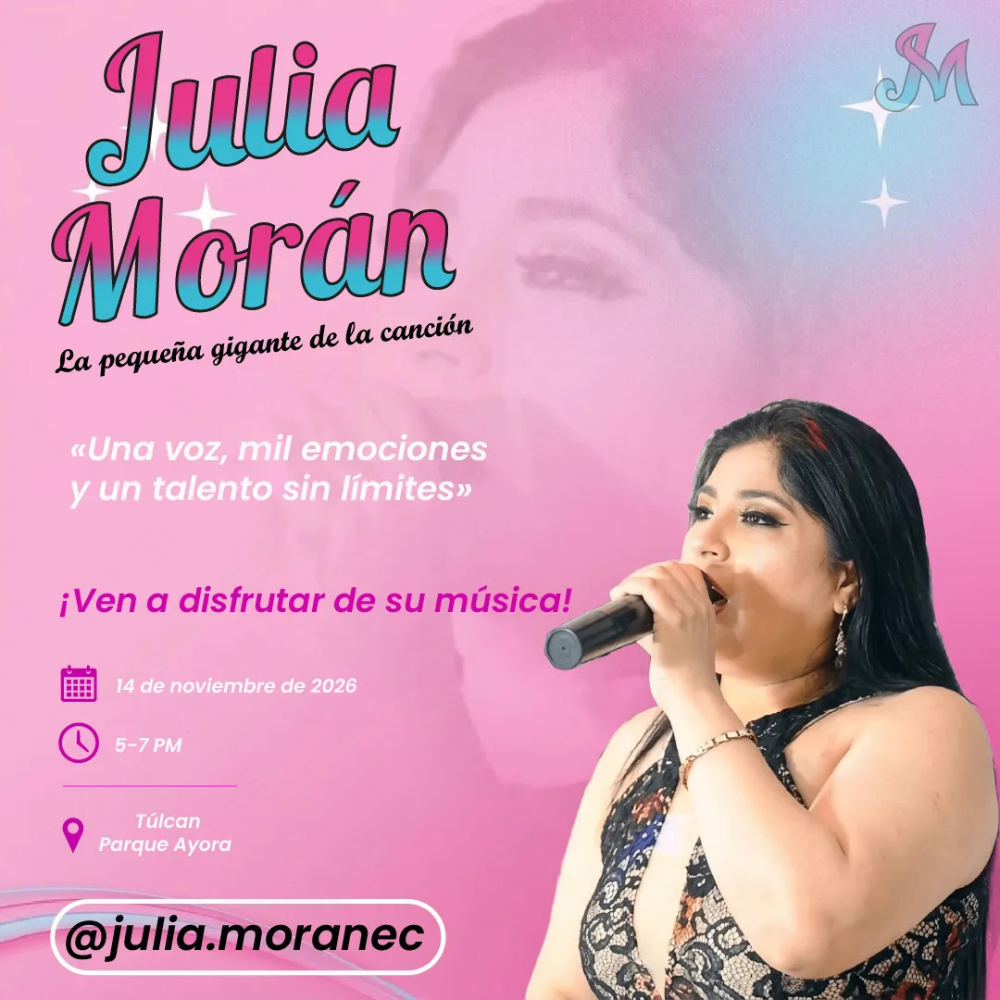

01 · DISEÑO GRÁFICO
Identidad visual
Creación de marcas y elementos gráficos.
Cada proyecto cuenta una historia.
Aquí encontrarás una selección de mis trabajos y proyectos realizados durante mi formación académica, donde experimento con diferentes técnicas y herramientas multimedia.

Creación de marcas y elementos gráficos.

Exploración de encuadres, luz y composición.

Propuestas visuales para comunicar ideas.

Creación de imágenes y composiciones ilustradas.

Exploración de recursos visuales y digitales.